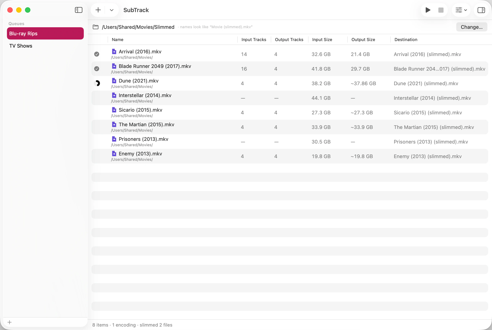

Sobald die Warteschlange zeigt, was jede Datei behält, kannst du sie ganz oder nur teilweise ausführen.

Beim Abbrechen wird die laufende Arbeit angehalten und die unvollständige Ausgabe verworfen. Deine Quelldateien werden nie verändert – SubTrack schreibt immer nur neue.
Ist „Starten“ abgeblendet, würden zwei Dateien in der Warteschlange an dieselbe Stelle geschrieben oder eine würde ihre eigene Quelle überschreiben. SubTrack startet erst, wenn das behoben ist, denn beides würde eine Datei zerstören. Siehe Einen Namenskonflikt beheben.
Jede laufende Zeile zeigt ihren eigenen Fortschritt, und die Leiste unter der Warteschlange zeigt, wie viele Objekte es gibt, wie viele fertig sind und wie viele gerade codiert werden. Auch das Dock-Symbol zeigt den Gesamtfortschritt, sodass du einen Stapel starten und zu etwas anderem wechseln kannst.
Dateien, die nur kopiert werden, sind fast sofort fertig. Eine Datei, in der eine Spur umcodiert werden muss, braucht so lange wie dieses Umcodieren – deshalb kann eine Warteschlange bei einer einzelnen Zeile zu hängen scheinen, während die anderen vorbeiziehen. Diese Zeile leistet echte Arbeit.
Die Warteschlange listet für jede Datei Spuranzahl und Größe vor und nach dem Verschlanken auf, sodass du siehst, was ein Durchlauf tatsächlich gebracht hat. Die Größe der Ausgabe steht erst fest, wenn eine Datei fertig ist; vorher gibt es auf der Festplatte nichts zu messen.
Klicke mit gedrückter Control-Taste oder mit der rechten Maustaste auf die Kopfzeile der Warteschlange, um Spalten auszublenden, die du nicht brauchst, und ihre Breite an „Name“ zurückzugeben; wiederhole das, um sie wieder einzublenden. SubTrack merkt sich deine Auswahl. Die Statusspalte und „Name“ bleiben immer sichtbar.
Die Statusspalte zeigt pro Zeile ein Symbol. Bewege den Zeiger darauf, um zu lesen, was es bedeutet: